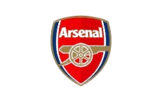
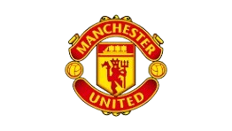
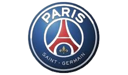
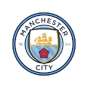
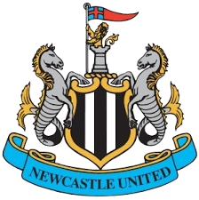
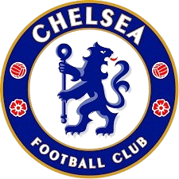

in 1899 by Joan Gamper, known for its distinctive attacking style of play, including the tiki-taka
style, and its acclaimed youth academy, La Masia
RealMadrid

In domestic football, the club has won 71 trophies; a record 36 La Liga titles, 20 Copa del Rey, 13
Supercopa de España, a Copa Eva Duarte and a Copa de la Liga.
Arsenal
a community away from their challenging work in the Woolwich Armaments factory. From those
humble beginnings, we now reach millions of supporters around the world.
Liverpool

It is the most successful English team in European football tournament history, having won
six European Cup/Champions League trophies. The club has also won the English top-division league title 19 times.
Manchster United
Greater Manchester, that plays in the Premier League. Founded as Newton Heath LYR Football
Club in 1878, they changed their name to Manchester United in 1902.
Paris Saint German
Paris and competing in Ligue 1, the top French division. They play at the Parc des Princes stadium
and are France's most decorated club, with numerous domestic titles and a Cup Winners' Cup, although
the Champions League remains elusive.
Manchester City
Premier League. Founded in 1880, the club has won multiple league titles, FA Cups, League Cups, and a
UEFA Champions League title. Known for their sky blue home shirts, their home stadium is the City of Manchester Stadium (Etihad Stadium).
Newcastle
for its Roman roots, medieval castle, and prominent role in the Industrial Revolution, and more recently for its thriving
culture, vibrant nightlife, and shopping. Other cities named Newcastle exist, such as Newcastle, Australia, a coastal city with
a focus on outdoor activities and sport, and Newcastle, South Africa, a smaller industrial and transport hub.
Chelsea
and named after neighbouring area Chelsea. They compete in the Premier League, the top tier of English football,
playing their home games at Stamford Bridge. Since 2022, the club has been owned by BlueCo.
Atletico Mardrid

double in 1996. Further domestic trophies include 10 Copa del Rey titles, two
Supercopas de España, one Copa Presidente FEF and one Copa Eva Duarte